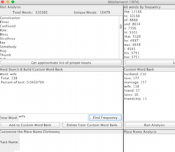

Ireland and the Irish in Interwar England
Cambridge University Press, 2014
The World of Dorothy L. Sayers
A visualization of the novelist's contexts
On Harriet Vane and Lord Peter Wimsey: An Essay with Personal Interruptions
The Toast, April 2015
Geo Text Analyzer
Java text analysis program
Why One of the World's Most Catholic Countries Might Approve Gay Marriage
The Atlantic, May 2015
The Road to Netherne
story map based on "Common People"